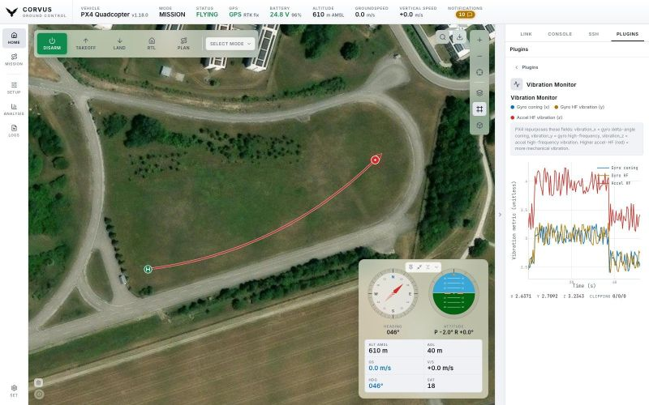

Ready in seconds
On connect Corvus streams only what flying needs: position, attitude, GPS, battery and link health. The full parameter set is loaded when you open the Parameters page.
Offline-first ground control station
Plan, monitor and control autonomous flight from one modern interface. Built for the field: a laptop, a telemetry radio, and no internet.
macOS Linux Windows PX4 & ArduPilot

Features
Every one of these is built and working today.
On connect Corvus streams only what flying needs: position, attitude, GPS, battery and link health. The full parameter set is loaded when you open the Parameters page.
Draw a take-off, waypoints, orbits and a landing on their own map, then read the whole flight as an altitude profile against the terrain under it. Save to disk, upload to the aircraft, fly on a second press.
A spinnable globe when you zoom out; ground with its real shape and extruded OpenStreetMap buildings when you zoom in. The aircraft is drawn at the altitude it is actually flying.
The interface loads nothing from the internet, and map tiles go into a local store as you use them. Download named regions ahead of time, elevation included, and the whole app keeps working with no connection.
Your airframe drawn to scale, every motor at its real distance from the centre of gravity. Click one to wire, position or bench-test it. Parameters with their firmware defaults, guided calibration, PID tuning and firmware flashing sit beside it.
Download the vehicle's ULog files over MAVLink and read them in the built-in Flight Review, on your own machine. Telemetry that Corvus recorded itself reviews the same way, radio link included.
Screenshots
15 screenshots of flying, setting up the aircraft and reviewing the flight. Select one to view it full size.
The live map, the mission planner, and the workspace beside the map.
Calibration, radio, tuning, motors, battery, safety and every parameter.
Logs downloaded from the aircraft and read on this computer. Nothing is uploaded anywhere.
Every screenshot is the real interface driven by real MAVLink: telemetry, parameters and the flown track all arrive over the wire. The aircraft producing them is simulated, not airborne, and the imagery is the Neubiberg test site. The pictures on this page use five of the six themes that ship.
Technical
A Python backend and a web frontend in one standalone desktop application. No server to deploy, no browser tab to manage.
| Autopilots | PX4 v1.16 · v1.17 · v1.18 as the primary target; ArduPilot 4.3 to 4.6 for Copter, Plane, Rover/Boat and Sub. |
|---|---|
| Links | MAVLink over a serial telemetry radio, UDP or TCP. A USB flight controller, a SiK radio or the ground-station UDP port is found and taken automatically at launch, with link-quality display and automatic reconnect. |
| RTK GPS | A base station plugged into the same computer is detected and surveyed in, and RTCM 3 corrections stream to the aircraft. An NTRIP caster works the same way over the network. |
| Video | The aircraft's camera over RTSP (decoded with ffmpeg) or WebRTC from a media server such as MediaMTX, in floating windows you can move to a second screen. A frozen picture is greyed out, never passed off as live. |
| Maps & 3D | MapLibre GL JS with 6 map services with 20 layers (two of them on your own API key), terrain relief and extruded OpenStreetMap buildings. Tiles are cached to a local offline store, and named regions can be downloaded in advance with their elevation. |
| Flight logs | ULog .ulg download and review in the built-in Flight Review; ArduPilot DataFlash .bin downloads but is not parsed. Corvus's own telemetry recording reviews on both stacks. |
| Tools | MAVLink console, SSH terminal to a companion computer, and a plugin folder. The Vibration Monitor, the SSH Launcher and Schwalby (buttons that run on this computer or over SSH) are included. |
| Platforms | macOS on Apple Silicon .dmg, Linux x86_64 .AppImage, Windows x64 .zip. Nothing else to install: Python, Qt and every dependency are inside. |
| From source | Python 3.12+ and one command, ./run.sh. The frontend is plain HTML, CSS and JavaScript; the desktop shell is PyQt6. |
| License | Sustainable Use License 1.0 (fair-code). The source is open to read, modify and build on, for internal, personal and non-commercial use, but not to resell. |
Why I built this
They did the job, but they got in the way. They load every parameter before you can do anything, feel slow on a field laptop, and leave log review to separate tools. I wanted a station that is ready in seconds, fetches parameters only when I open them, has a flight reviewer built in, and gets the small details right, in simulation as much as on a real aircraft. And because no station covers every setup, you can write your own plugins and extend it yourself.
In my day-to-day work as a PhD researcher there is very little room for AI-assisted, “vibe-coded” development, because the setting simply does not allow for it. That method is nonetheless becoming a real part of how software gets built, and the only honest way to find out where it works, where it breaks, and how to direct it well is to use it seriously on something non-trivial.

Download
Download the latest Corvus GCS release or explore the source code on GitHub.
Releases are published on GitHub.